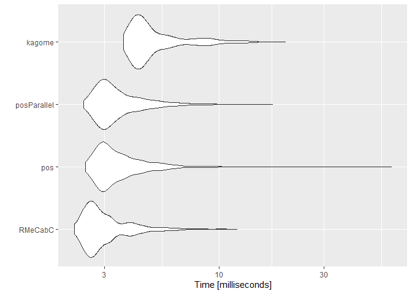
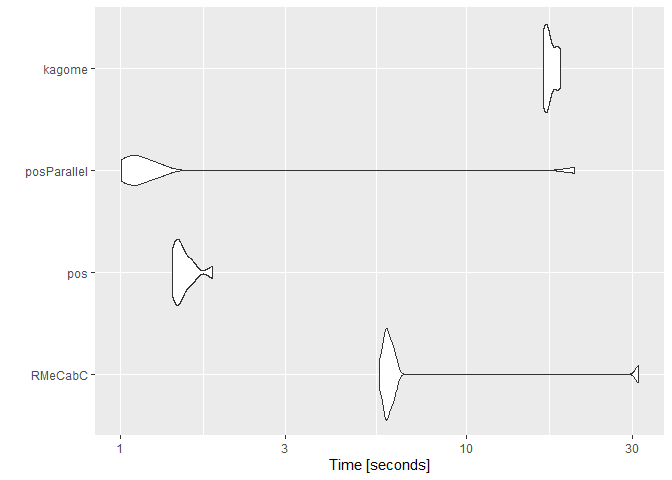

RcppKagome is an R interface to ikawaha/Kagome; Self-contained Japanese morphological analyzer written in pure Go.
Installation
if (!requireNamespace("async", "kagomer")) {
remotes::install_github("gaborcsardi/async")
remotes::install_github("paithiov909/kagomer")
}
remotes::install_github("paithiov909/RcppKagome")Usage
Call Kagome
res <- RcppKagome::kagome("雨にも負けず 風にも負けず")
str(res)
#> List of 1
#> $ :List of 11
#> ..$ 0 :List of 5
#> .. ..$ Id : int 376225
#> .. ..$ Start : int 0
#> .. ..$ End : int 1
#> .. ..$ Surface: chr "雨"
#> .. ..$ Feature: chr [1:9] "名詞" "一般" "*" "*" ...
#> ..$ 1 :List of 5
#> .. ..$ Id : int 53040
#> .. ..$ Start : int 1
#> .. ..$ End : int 2
#> .. ..$ Surface: chr "に"
#> .. ..$ Feature: chr [1:9] "助詞" "格助詞" "一般" "*" ...
#> ..$ 2 :List of 5
#> .. ..$ Id : int 73244
#> .. ..$ Start : int 2
#> .. ..$ End : int 3
#> .. ..$ Surface: chr "も"
#> .. ..$ Feature: chr [1:9] "助詞" "係助詞" "*" "*" ...
#> ..$ 3 :List of 5
#> .. ..$ Id : int 352000
#> .. ..$ Start : int 3
#> .. ..$ End : int 5
#> .. ..$ Surface: chr "負け"
#> .. ..$ Feature: chr [1:9] "動詞" "自立" "*" "*" ...
#> ..$ 4 :List of 5
#> .. ..$ Id : int 36553
#> .. ..$ Start : int 5
#> .. ..$ End : int 6
#> .. ..$ Surface: chr "ず"
#> .. ..$ Feature: chr [1:9] "助動詞" "*" "*" "*" ...
#> ..$ 5 :List of 5
#> .. ..$ Id : int 95
#> .. ..$ Start : int 6
#> .. ..$ End : int 7
#> .. ..$ Surface: chr " "
#> .. ..$ Feature: chr [1:9] "記号" "空白" "*" "*" ...
#> ..$ 6 :List of 5
#> .. ..$ Id : int 380203
#> .. ..$ Start : int 7
#> .. ..$ End : int 8
#> .. ..$ Surface: chr "風"
#> .. ..$ Feature: chr [1:9] "名詞" "一般" "*" "*" ...
#> ..$ 7 :List of 5
#> .. ..$ Id : int 53040
#> .. ..$ Start : int 8
#> .. ..$ End : int 9
#> .. ..$ Surface: chr "に"
#> .. ..$ Feature: chr [1:9] "助詞" "格助詞" "一般" "*" ...
#> ..$ 8 :List of 5
#> .. ..$ Id : int 73244
#> .. ..$ Start : int 9
#> .. ..$ End : int 10
#> .. ..$ Surface: chr "も"
#> .. ..$ Feature: chr [1:9] "助詞" "係助詞" "*" "*" ...
#> ..$ 9 :List of 5
#> .. ..$ Id : int 352000
#> .. ..$ Start : int 10
#> .. ..$ End : int 12
#> .. ..$ Surface: chr "負け"
#> .. ..$ Feature: chr [1:9] "動詞" "自立" "*" "*" ...
#> ..$ 10:List of 5
#> .. ..$ Id : int 36553
#> .. ..$ Start : int 12
#> .. ..$ End : int 13
#> .. ..$ Surface: chr "ず"
#> .. ..$ Feature: chr [1:9] "助動詞" "*" "*" "*" ...Prettify Output
res <- RcppKagome::kagome(
c(
"陽が照って鳥が啼き あちこちの楢の林も、けむるとき",
"ぎちぎちと鳴る 汚い掌を、おれはこれからもつことになる"
)
)
res <- RcppKagome::prettify(res)
print(res)
#> sentence_id token POS1 POS2 POS3 POS4 X5StageUse1
#> 1 1 陽 名詞 一般 <NA> <NA> <NA>
#> 2 1 が 助詞 格助詞 一般 <NA> <NA>
#> 3 1 照っ 動詞 自立 <NA> <NA> 五段・ラ行
#> 4 1 て 助詞 接続助詞 <NA> <NA> <NA>
#> 5 1 鳥 名詞 一般 <NA> <NA> <NA>
#> 6 1 が 助詞 格助詞 一般 <NA> <NA>
#> 7 1 啼き 動詞 自立 <NA> <NA> 五段・カ行イ音便
#> 8 1 記号 空白 <NA> <NA> <NA>
#> 9 1 あちこち 名詞 代名詞 一般 <NA> <NA>
#> 10 1 の 助詞 連体化 <NA> <NA> <NA>
#> 11 1 楢 名詞 一般 <NA> <NA> <NA>
#> 12 1 の 助詞 連体化 <NA> <NA> <NA>
#> 13 1 林 名詞 一般 <NA> <NA> <NA>
#> 14 1 も 助詞 係助詞 <NA> <NA> <NA>
#> 15 1 、 記号 読点 <NA> <NA> <NA>
#> 16 1 けむる 動詞 自立 <NA> <NA> 五段・ラ行
#> 17 1 とき 名詞 非自立 副詞可能 <NA> <NA>
#> 18 2 ぎちぎち 副詞 一般 <NA> <NA> <NA>
#> 19 2 と 助詞 格助詞 一般 <NA> <NA>
#> 20 2 鳴る 動詞 自立 <NA> <NA> 五段・ラ行
#> 21 2 記号 空白 <NA> <NA> <NA>
#> 22 2 汚い 形容詞 自立 <NA> <NA> 形容詞・アウオ段
#> 23 2 掌 名詞 一般 <NA> <NA> <NA>
#> 24 2 を 助詞 格助詞 一般 <NA> <NA>
#> 25 2 、 記号 読点 <NA> <NA> <NA>
#> 26 2 おれ 名詞 代名詞 一般 <NA> <NA>
#> 27 2 は 助詞 係助詞 <NA> <NA> <NA>
#> 28 2 これから 副詞 助詞類接続 <NA> <NA> <NA>
#> 29 2 もつ 動詞 自立 <NA> <NA> 五段・タ行
#> 30 2 こと 名詞 非自立 一般 <NA> <NA>
#> 31 2 に 助詞 格助詞 一般 <NA> <NA>
#> 32 2 なる 動詞 自立 <NA> <NA> 五段・ラ行
#> X5StageUse2 Original Yomi1 Yomi2
#> 1 <NA> 陽 ヒ ヒ
#> 2 <NA> が ガ ガ
#> 3 連用タ接続 照る テッ テッ
#> 4 <NA> て テ テ
#> 5 <NA> 鳥 トリ トリ
#> 6 <NA> が ガ ガ
#> 7 連用形 啼く ナキ ナキ
#> 8 <NA>
#> 9 <NA> あちこち アチコチ アチコチ
#> 10 <NA> の ノ ノ
#> 11 <NA> 楢 ナラ ナラ
#> 12 <NA> の ノ ノ
#> 13 <NA> 林 ハヤシ ハヤシ
#> 14 <NA> も モ モ
#> 15 <NA> 、 、 、
#> 16 基本形 けむる ケムル ケムル
#> 17 <NA> とき トキ トキ
#> 18 <NA> ぎちぎち ギチギチ ギチギチ
#> 19 <NA> と ト ト
#> 20 基本形 鳴る ナル ナル
#> 21 <NA>
#> 22 基本形 汚い キタナイ キタナイ
#> 23 <NA> 掌 タナゴコロ タナゴコロ
#> 24 <NA> を ヲ ヲ
#> 25 <NA> 、 、 、
#> 26 <NA> おれ オレ オレ
#> 27 <NA> は ハ ワ
#> 28 <NA> これから コレカラ コレカラ
#> 29 基本形 もつ モツ モツ
#> 30 <NA> こと コト コト
#> 31 <NA> に ニ ニ
#> 32 基本形 なる ナル ナルPrettified outputs have these columns.
- sentence_id: 文番号（sentence index）
- token: 表層形 (surface form)
- POS1~POS4: 品詞, 品詞細分類1, 品詞細分類2, 品詞細分類3
- X5StageUse1: 活用型（ex. 五段, 下二段…）
- X5StageUse2: 活用形（ex. 連用形, 基本形…）
- Original: 原形（lemmatised form）
- Yomi1: 読み（readings）
- Yomi2: 発音（pronunciation）
Kick Web API of Kagome
RcppKagome provides three simple helpers, that are serialize, queue, and kick, so that user can access their own Kagome Web API. Once set KAGOME_URL as environment vars and following steps below, you can easily use Kagome server via Web API.
library(RcppKagome)
sentences <- c(
"激しい激しい熱や喘ぎのあいだから、お前は私に頼んだのだ",
"銀河や太陽、気圏などと呼ばれた世界の 空から落ちた雪の最後の一碗を"
)
sentences %>%
RcppKagome::serialize() %>%
RcppKagome::queue() %>%
RcppKagome::kick() %>%
RcppKagome::pack_df("surface")
#> doc_id
#> 1 1
#> 2 2
#> text
#> 1 激しい 激しい 熱 や 喘ぎ の あいだ から 、 お前 は 私 に 頼ん だ の だ
#> 2 銀河 や 太陽 、 気圏 など と 呼ば れ た 世界 の 空 から 落ち た 雪 の 最後 の 一 碗 をComparison with Alternatives
Targets of Comparison
-
paithiov909/RcppKagome
- RcppKagome::kagome
-
IshidaMotohiro/RMeCab
- RMeCab::RMeCabC
-
junhewk/RcppMeCab
- RcppMeCab::pos
- RcppMeCab::posParallel
Data
csv <- file.path("tools/miyazawa_kenji_head.csv") %>%
readr::read_csv() %>%
dplyr::slice_head(prop = .4) %>%
dplyr::mutate(
sentences_shift_jis = iconv(sentences, from = "UTF-8", to = "CP932")
)
#>
#> -- Column specification --------------------------------------------------------
#> cols(
#> rowid = col_double(),
#> sentences = col_character()
#> )
dplyr::glimpse(csv)
#> Rows: 349
#> Columns: 3
#> $ rowid <dbl> 1, 2, 3, 4, 5, 6, 7, 8, 9, 10, 11, 12, 13, 14, 15,~
#> $ sentences <chr> "ありときのこ", "宮沢賢治", "苔いちめんに、霧がぽしゃぽしゃ降って、蟻の歩哨は鉄の帽子のひさ~
#> $ sentences_shift_jis <chr> "ありときのこ", "宮沢賢治", "苔いちめんに、霧がぽしゃぽしゃ降って、蟻の歩哨は鉄の帽子のひさ~Tokenize Character Scalar
tm <- microbenchmark::microbenchmark(
RMeCabC = RMeCab::RMeCabC(csv$sentences_shift_jis[3], mecabrc = "C:/MeCab/ipadic-shiftjis/mecabrc"),
pos = RcppMeCab::pos(csv$sentences[3]),
posParallel = RcppMeCab::posParallel(csv$sentences[3]),
kagome = RcppKagome::kagome(csv$sentences[3]),
times = 500L
)
summary(tm)
#> expr min lq mean median uq max neval
#> 1 RMeCabC 2.1890 2.54765 3.165649 2.78945 3.28150 12.0767 500
#> 2 pos 2.4616 2.91235 3.786297 3.22255 3.92750 61.0090 500
#> 3 posParallel 2.4110 2.89575 3.598448 3.18665 3.87480 17.5336 500
#> 4 kagome 3.6552 4.15285 5.429362 4.53995 5.68115 20.0648 500
ggplot2::autoplot(tm)
#> Coordinate system already present. Adding new coordinate system, which will replace the existing one.
Tokenize Character Vector
RMeCabC is wrapped with purrr::map here because that function is not vectorized.
tm <- microbenchmark::microbenchmark(
RMeCabC = purrr::map(csv$sentences_shift_jis, ~ RMeCab::RMeCabC(., mecabrc = "/MeCab/ipadic-shiftjis/mecabrc")),
pos = RcppMeCab::pos(csv$sentences),
posParallel = RcppMeCab::posParallel(csv$sentences),
kagome = RcppKagome::kagome(csv$sentences),
times = 10L
)
summary(tm)
#> expr min lq mean median uq max
#> 1 RMeCabC 860.9443 882.5697 929.02912 929.77815 934.7587 1066.6487
#> 2 pos 105.2888 118.0663 155.95026 139.65940 157.0348 352.6873
#> 3 posParallel 65.8562 77.8910 91.66571 93.86745 99.6987 122.1134
#> 4 kagome 1596.2336 1790.6898 1845.62462 1839.26110 1904.4647 2109.9588
#> neval
#> 1 10
#> 2 10
#> 3 10
#> 4 10
ggplot2::autoplot(tm)
#> Coordinate system already present. Adding new coordinate system, which will replace the existing one.
Code of Conduct
Please note that the RcppKagome project is released with a Contributor Code of Conduct. By contributing to this project, you agree to abide by its terms.